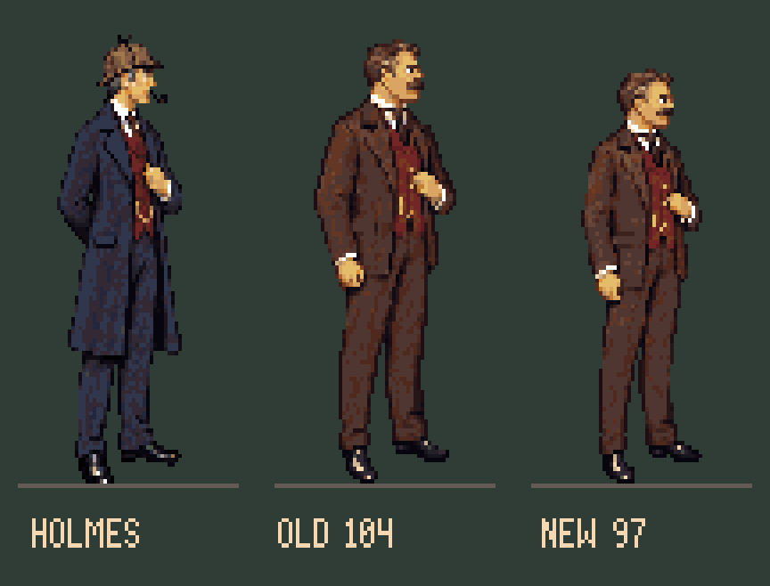
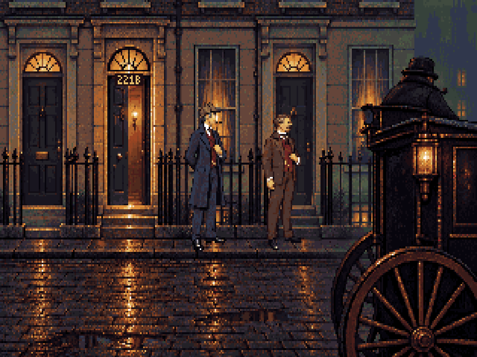

Holmes stays at 106 native pixels. Watson is now 97, with a smaller head and narrower shoulders. Same 72×120 canvas, [36,113] anchor and 64-colour palette.


Review study. Production view 201 still uses r13 until this correction is integrated. Front/back poses and walking are not supplied by this neutral correction. Portraits and seated Watson retain their separate approved references.
Method and canon · Pinned model and measurements · Editable Pixelorama master · View 201 candidate